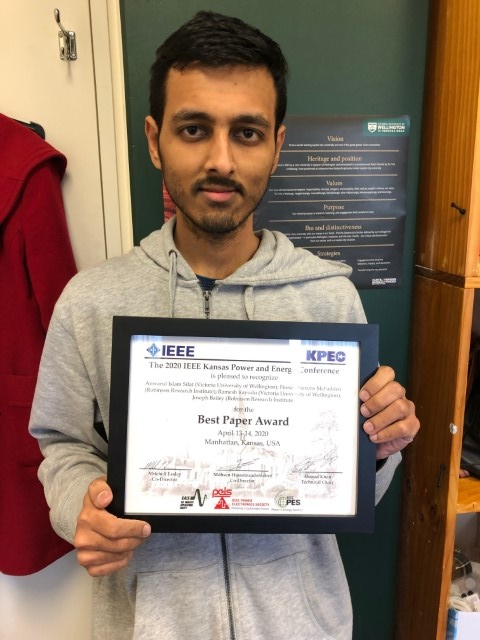
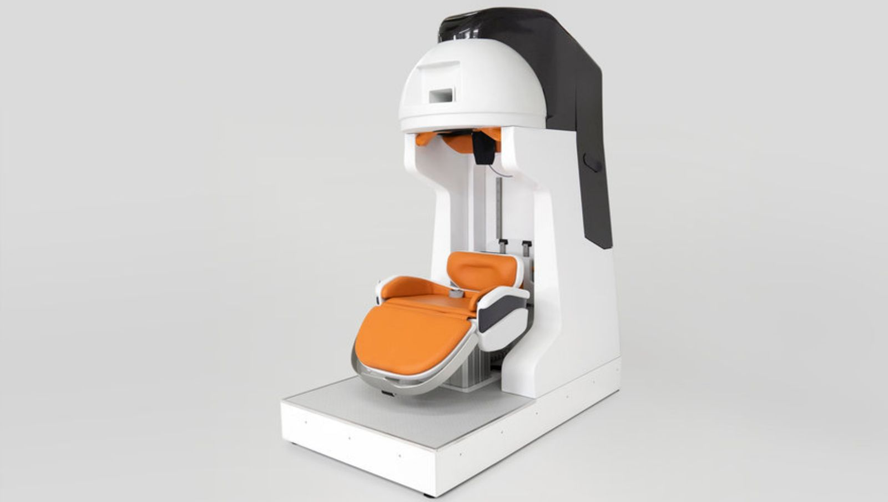
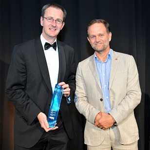
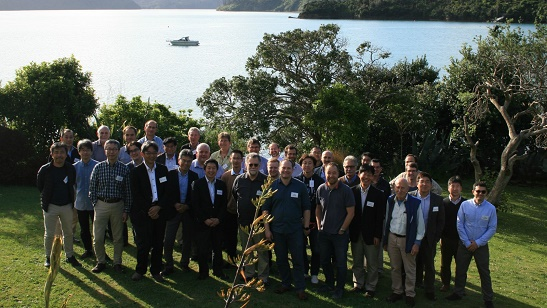
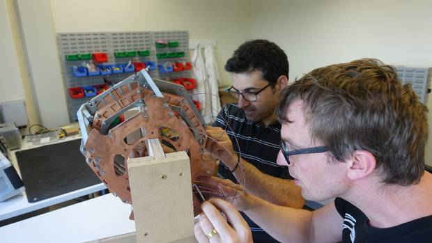

2020
Robinson Research Institute hosts workshop on non-destructive testing for the power industry
18 November, Victoria University of Wellington
Organisations are increasingly becoming aware of the benefits of non-destructive testing methods when it comes to monitoring and managing the health of their assets. This is especially true of sectors that involve huge capital investments, maintenance and replacement costs.
Superconductor technology for smaller, sooner fusion
14 October, Phys.org
The high-field pathway to fusion, aims to generate fusion in compact devices on a shorter timescale and lower cost than alternative approaches.
Magnetic attraction for space travel
1 October, Victoria University of Wellington
Future space missions may be propelled using superconductor magnets developed by the Robinson Research Institute.
$15m government grant for electric planes, trains and ships research.
17 September, Radio New Zealand
The Ministry for Business, Innovation and Employment has awarded the Robinson Research Institute at Victoria University of Wellington funding to working on high-power electric motors for large-scale transport such as planes, trains and ships.
Save the planet with science — from New Zealand
17 September, Victoria University of Wellington

Calling New Zealand’s brightest! Exciting science doesn’t just happen in other countries. It’s being done in New Zealand, too. And you can get involved.
Novel Kiwi technology could make Mars attainable
15 September, Scoop
Robinson Research Institute, Victoria University of Wellington, is developing technology to revolutionise spacecraft propulsion, making it more efficient to propel rockets while in space.
2020 Endeavour Fund Success
14 September, Ministry of Buisiness, Innovation and Employment
The Robinson Research Institute's Endeavour fund proposal entitled 'High magnetic field electric propulsion for space' has been approved by the Ministry of Buisiness, Innovation and Employment. The funding awarded totals $11.6 million dollars over 5 years.
PhD student wins IEEE Best Paper Award
4 August, Robinson Research Institute
PhD student Anwarul Sifat and co-authors Fiona Stevens-McFadden, Ramesh Rayudu and Joseph Bailey were awarded Best Paper by the IEEE at the 2020 IEEE Kansas Power and Engineering Conference for their paper "Classification of Stages of a High Impedance Fault Using Sequential Learning Algorithms".
Researchers develop a head-only MRI system to make brain scans more comfortable
24 July, designboom
The seated solution intends to reduce anxiety thanks to a number of features, including a remote control for the patient and a window to see out of.
New head scanning machine designed to reduce anxiety
7 July, Radio New Zealand
Head scans in Magnetic Resonance Imaging, or MRI machines, should become more comfortable thanks to work being done by Wellington researchers.
Wellington researchers looking into making MRI more comfortable.
University researchers create innovative MRI technology
6 July, Victoria University of Wellington
In a collaboration between scientists and designers, Te Herenga Waka—Victoria University of Wellington researchers have developed new technology to make magnetic resonance imaging machines (MRIs) more comfortable, accessible, and affordable.
Materials: Fact or Fiction - Adamantium with Dr Chris Bumby
14 May, Radio New Zealand
Tonight Dr. Chris Bumby, Principal Scientist at Victoria University of Wellington’s Robinson Institute; and Associate Investigator at the MacDiarmid Institute gies us his scientific take on Adamantium - one of several ‘amazing materials’ which have been invented over the years by the authors of Marvel comics.
Materials: Fact or Fiction - Mithril with Dr Chris Bumby
19 March, Radio New Zealand
MacDiarmid Institute Associate Investigator and Senior Scientist at the Robinson Research Institute of Victoria University of Wellington give us his scietific take on Mithril from Lord of the Rings.
Robinson Research Institute’s hydrogen-steel making research wins Innovation Award
27 February, Victoria University of Wellington
Dr Chris Bumby, Principal Scientist, Robinson Research Institute, has received the HERA 2020 Innovation Award, in recognition of his work towards developing a hydrogen-ironmaking process. This novel process has the potential to eliminate carbon dioxide emissions from New Zealand’s steel industry.
2019
Third Robinson Research Institute and Kyoto University workshop a resounding success
12 December, Victoria University of Wellington
Hosted by Victoria University of Wellington, the workshop attracted almost 40 attendees from Japan, the United States (US) and the University to promote better research connections between VUW researchers and their counterparts at Kyoto University, and with other closely-aligned research organisations in Japan.
New Zealand innovation collab headed for space
2 December, Voxy
A research collaboration between Wellington Faculty of Engineering’s Robinson Research Institute and UNSW Canberra Space will accelerate the adoption of novel technology for use in satellites.
New Zealand Funds Innovative Space Tech Projects
12 November, OpenGov Asia
Six New Zealand research projects have received NZ$ 500,000 each from the Ministry of Business, Innovation and Employment’s competitive Catalyst: Strategic Space fund.
Is NZ looking at a fusion future?
7 November, Newsroom
Massachusetts Institute of Technology’s Dr Joseph V Minervini and Victoria University of Wellington's Dr Nick Long take a close look at nuclear fusion and what it might have to do with New Zealand
Public lecture explores role of superconductors in energy
6 November, Scoop
Victoria University of Wellington will host a lecture by Dr Joseph Minervini, a global expert on superconductivity from Massachusetts Institute of Technology.
Local Doctoral Student Wins Prized International Award
10 October, Scoop

Justin Brooks (Gus) was awarded the prestigious Best Poster title out of over 800 posters, presented by leading Scientists at the International Conference on Magnet Technology.
Google Doodle for Bill Robinson’s birthday
2 October, Sciblogs

The Google Doodle commemorates the birth in 1938 of Bill Robinson, the kiwi scientist who invented the rubber ‘shock absorbers’ that provide some seismic insulation for large buildings, notably under Te Papa in Wellington.
Victoria University receives $24m for ground-breaking research
17 September, Voxy
Dr Chris Bumby, a Senior Scientist in the University's Robinson Research Institute, is leading a trans-Tasman multi-institution team that has received nearly $6.5 million for a five-year Research Programme project to develop new chemical processes to eliminate carbon dioxide emissions during the industrial production of critical metals-iron, steel and vanadium.
Wellington engineer creates solution for power companies replacing concrete power poles
15 August, TVNZ
What could a New Zealand space programme look like?
19 July, Newsroom
As we mark the fiftieth anniversary of man landing on the moon Dr Nick Long reflects on what that's meant for New Zealand and considers the space 'gold rush' ahead.
2018
Young NZ scientist's pioneering helmet-style brain scanner paves way for next-level MRI imaging
2 December, New Zealand Herald
Technology being developed by a Kiwi researcher could pave the way toward brain-scanning systems able to be worn on our heads.
Turning brain scanning on its head with smaller MRIs
29 November, Kiwinet
Wellington researcher Ben Parkinson has received a boost from KiwiNet to help commercialise his game-changing compact superconducting magnets for smaller, next-generation, magnetic resonance imaging (MRI) systems.
Planes, trains and superconducting magnets
22 September, Radio New Zealand

New Zealand scientists are creating a device which could help power aeroplanes using super-conducting magnets.
2018 KiwiNet Awards Finalist -- Victoria University’s Multi-party Chinese Partnership
5 July, YouTube
New Zealand scientists are creating a device which could help power aeroplanes using super-conducting magnets.
2017
Funding boost for university's hybrid jet engine
14 September, Newstalk ZB
A world changing hybrid-electric jet engine motor could be the result of the latest round of Government funding for science projects. As part of this year's investment found, 29 million dollars from MBIE has been awarded to Victoria University projects, including six point three million for the jet plane project.
New $29 million funding fuels hybrid-electric jet engine and other research projects
13 September, Victoria University of Wellington
Development of technology to help build the world's first hybrid-electric passenger jet plane is among Victoria University of Wellington projects to receive nearly $29 million in the Ministry of Business, Innovation and Employment's 2017 Endeavour Fund.
The race to get hybrid-electric jet planes off the ground (slideshow)
10 July, Radio New Zealand
A team of Wellington scientists is hoping to use their technology to help build the world's first hybrid-electric jet plane.
The race to get hybrid-electric jet planes off the ground
10 July, Radio New Zealand
Investing in our innovators
27 June, Viclink
Further cementing Victoria University of Wellington’s reputation for innovation, three of its researchers were recently awarded $25,000 each from KiwiNet’s Emerging Innovator Fund.
Wellington scientists getting hybrid planes off the ground
26 June, Victoria University of Wellington
A team of Victoria University of Wellington researchers is hoping to use their technology to help build the world's first hybrid-electric jet plane.
Finding favour in China
Victorius Autumn

A memorandum of understanding with Beijing Jiaotong University is already reaping rewards for Victoria, including access to some of the highest echelons of the Chinese Government.
Victoria strengthens research and innovation ties with China
10 April, Victoria University of Wellington
A Memorandum of Understanding has been signed between Victoria University of Wellington and the Chinese Academy of Sciences, which represents a large group of research, tertiary and supporting institutes in China.
2016
New Robinson Research Institute Director
13 December, Victoria University of Wellington
Associate Professor Nick Long has been appointed as the new Director of Victoria University’s Robinson Research Institute.
Victoria research flourishes in Marsden funding
3 November, Victoria University of Wellington
Victoria University of Wellington researchers have received 26 prestigious Marsden Fund grants worth $14.3 million, the largest number ever received by the University and more than 22 percent of the total funding awarded in 2016.
Victoria researchers win multi-million-dollar funding
15 September, Victoria University of Wellington
Dr Mike Staines, Senior Scientist with the Robinson Research Institute, is leading a project that includes researchers from Callaghan Innovation and will receive $1 million over three years to develop technology that would slash the cost of manufacturing sensors for ultrasound imaging while at the same time improving performance through enhanced image quality.
National Science Challenge seed funding to explore innovative early cancer detection
2 September, Victoria University of Wellington
Victoria University of Wellington researchers have received $255,000 in seed funding to develop new magnetic resonance imaging (MRI) contrast agents for early detection of cancer and other diseases.
On track to slash Beijing subway energy use
Victorius Spring
The heavy energy use of Beijing’s subway system could be nearly halved, thanks to high-temperature superconducting technology.
Lucrative tech deal to slash Beijing subway energy use
Victoria University of Wellington
Research from Victoria University of Wellington’s Robinson Research Institute as part of a new multi-million-dollar joint venture deal will underpin ground-breaking technology that could see the heavy energy use of Beijing’s subway system cut by forty percent.
2015
Research funding success for Victoria University
3 September, Victoria University of Wellington
Victoria University scientists will be progressing cutting-edge research in high-value areas after winning significant funding in the 2015 Ministry of Business, Innovation and Employment funding round.
A transportable MRI
28 May, Radio New Zealand
A pop-up MRI or magnetic resonance imaging machine that could be transported in a shipping container has been designed by the Robinson Research Institute.
Transforming power transmission worldwide
20 May, Victoria University of Wellington
An collaboration led by Victoria University scientists shows high temperature superconducting (HTS) power transformers can significantly reduce energy loss.
Victoria designs transportable MRI machine
22 April, Victoria University of Wellington
Named the ‘MRI Ambulance’, the design places a Magnetic Resonance Imaging (MRI) scanner within a refrigerated shipping container which can be transported on the back of a flatbed truck.
Using a Scanning Electron Microscope
26 February, Radio New Zealand
Materials engineer Dr Ruth Knibbe uses a scanning electron microscope (SEM) to image her own samples and samples for other scientists. Unlike a light microscope, an SEM uses a focused beam of electrons to produce images from the top surface of a sample.
2014
Marsden funding success for Victoria researchers
4 November, Victoria University of Wellington
Victoria University of Wellington researchers have received 25 prestigious Marsden Fund grants worth $12.1 million, the largest number ever received by the University.
Deal with US company opens doors for Robinson Research Institute
7 October, Victoria University of Wellington
The Robinson Research Institute has signed a strategic partnership agreement with NASDAQ-listed Superconductor Technologies Inc. (STI) which will see the Institute’s innovative technology used for new applications in the energy and health industries.
Partnering opens doors
11 September, Victoria University of Wellington
The Robinson Research Institute’s close relationships with business partners exemplify the entrepreneurial approach being taken at Victoria University.
2013
Callaghan Innovation research teams to transfer to Victoria University
20 December, Victoria University of Wellington
Two Callaghan Innovation research teams will join Victoria University of Wellington early in the new year under a transfer agreement between the two organisations.